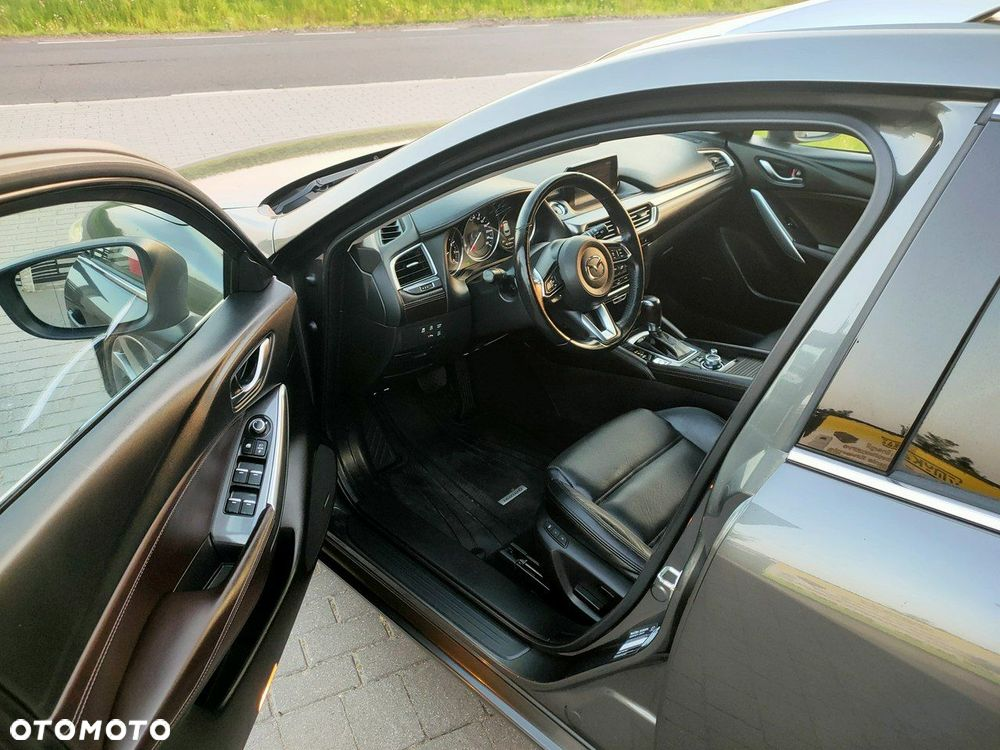
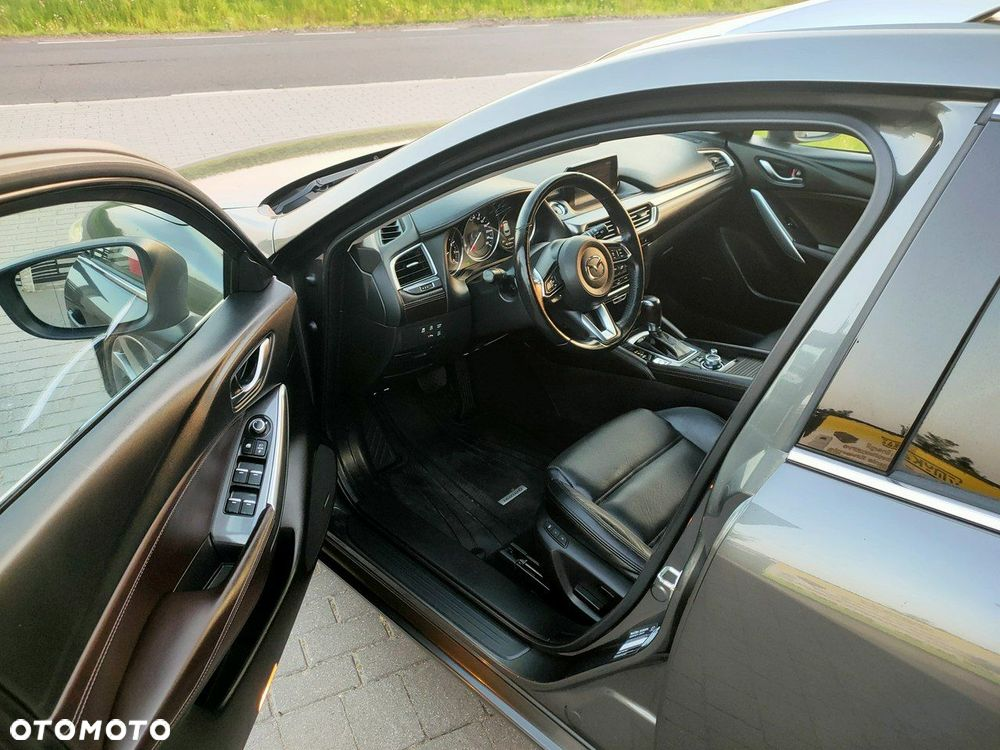

W ofercie piękna MAZDA 6 SKYACTIV-G z benzynowym silnikiem o pojemności 2.5L i mocy 192KM oraz automatyczną skrzynią biegów. Auto zostało sprowadzone z Niemiec, opłacone i przygotowane do rejestracji. Przebieg oryginalny 122tys km wpisuję na fakturę sprzedaży. Książka serwisowa elektroniczna, dwa kluczyki. Bogate wyposażenie pozwalające cieszyć bezpieczną i komfortową jazdą, w skład którego wchodzi m.in: * nawigacja * tempomat aktywny * klimatyzacja automatyczna 2- strefowa * kamera cofania * czujniki parkowania przód i tył * skórzana, czarna tapicerka * podgrzewane fotele przód i tył * elektrycznie ustawiane fotele przód i tył * elektryczne, składane lusterka boczne * elektryczne szyby przód i tył * szklany dach * podgrzewana, skórzana, wielofunkcyjna kierownica * radio fabryczne * bezkluczykowy system odpalania * czujnik martwego pola * czujnik deszczu * czujnik zmierzchu * head-up * aluminiowe felgi 19" Wystawiam fakturę Vat-marża z potwierdzeniem przebiegu. Kupujący zwolniony z podatku 2%. Możliwość finansowania. Możliwość dowozu auta pod dom lub wynajęcia tablic przejazdowych. ZAPRASZAMY SERDECZNIE - Dodatkowe informacje: liczba poduszek powietrznych: 8, liczba miejsc: 5, tapicerka: skora, tapicerka kolor: czarny, kraj pochodzenia: Niemcy Numer oferty: AKL18ZNKQ


 
